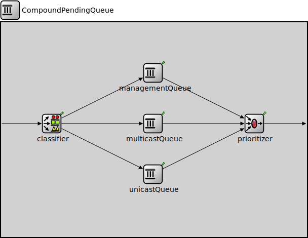

Package: inet.linklayer.ieee80211.mac.queue
CompoundPendingQueue
compound module(no description)
Usage diagram
The following diagram shows usage relationships between types. Unresolved types are missing from the diagram.
Inheritance diagram
The following diagram shows inheritance relationships for this type. Unresolved types are missing from the diagram.
Extends
| Name | Type | Description |
|---|---|---|
| CompoundPacketQueueBase | compound module |
This compound module serves as a base module for complex packet queues formed by combining several queueing components. |
Parameters
| Name | Type | Default value | Description |
|---|---|---|---|
| displayStringTextFormat | string | "contains %p pk (%l) pushed %u created %c\n pulled %o removed %r dropped %d" |
determines the text that is written on top of the submodule |
| packetCapacity | int | 100 |
maximum number of packets in the queue, no limit by default |
| dataCapacity | int | -1b |
maximum total length of packets in the queue, no limit by default |
| dropperClass | string | "" |
determines which packets are dropped when the queue is overloaded, packets are not dropped by default; the parameter must be the name of a C++ class which implements the IPacketDropperFunction C++ interface and is registered via Register_Class |
Properties
| Name | Value | Description |
|---|---|---|
| display | i=block/queue | |
| class | CompoundPacketQueueBase | |
| defaultStatistic | queueLength:vector |
Gates
| Name | Direction | Size | Description |
|---|---|---|---|
| in | input | ||
| out | output |
Signals
| Name | Type | Unit |
|---|---|---|
| packetRemoved | inet::Packet | |
| packetPushStarted | inet::Packet | |
| packetDropped | inet::Packet | |
| packetPushEnded | inet::Packet? | |
| packetPulled | inet::Packet |
Statistics
| Name | Title | Source | Record | Unit | Interpolation Mode |
|---|---|---|---|---|---|
| queueBitLength | queue bit length | warmup(atomic(constant0(localSignal(packetPushEnded)) + sum(packetLength(localSignal(packetPushStarted))) - sum(packetLength(localSignal(packetPulled))) - sum(packetLength(localSignal(packetRemoved))) - sum(packetLength(localSignal(packetDropped))))) | last, max, timeavg, vector | b | sample-hold |
| queueLength | queue length | warmup(atomic(constant0(localSignal(packetPushEnded)) + count(localSignal(packetPushStarted)) - count(localSignal(packetPulled)) - count(localSignal(packetRemoved)) - count(localSignal(packetDropped)))) | last, max, timeavg, vector | pk | sample-hold |
| droppedPacketsQueueOverflow | dropped packets: queue overflow | packetDropReasonIsQueueOverflow(localSignal(packetDropped)) | count | pk | none |
| queueingTime | queueing times | queueingTime(localSignal(packetPulled)) | histogram, vector | s | none |
| incomingDataRate | incoming datarate | throughput(localSignal(packetPushStarted)) | vector | bps | linear |
| flowQueueingTime | flow queueing times | queueingTime(demuxFlow(localSignal(packetPulled))) | histogram, vector | s | none |
| incomingPacketLengths | incoming packet lengths | packetLength(localSignal(packetPushStarted)) | sum, histogram, vector | b | none |
| flowIncomingDataRate | flow specific incoming data rate | throughput(flowPacketLength(demuxFlow(localSignal(packetPushStarted)))) | vector | bps | linear |
| outgoingDataRate | outgoing datarate | throughput(localSignal(packetPulled)) | vector | bps | linear |
| outgoingPacketLengths | outgoing packet lengths | packetLength(localSignal(packetPulled)) | sum, histogram, vector | b | none |
| droppedPacketLengthsQueueOverflow | dropped packet lengths: queue overflow | packetLength(packetDropReasonIsQueueOverflow(localSignal(packetDropped))) | sum, vector | b | none |
| flowOutgoingDataRate | flow specific outgoing data rate | throughput(flowPacketLength(demuxFlow(localSignal(packetPulled)))) | vector | bps | linear |
| incomingPackets | incoming packets | localSignal(packetPushStarted) | count | pk | |
| outgoingPackets | outgoing packets | localSignal(packetPulled) | count | pk |
Unassigned submodule parameters
| Name | Type | Default value | Description |
|---|---|---|---|
| classifier.displayStringTextFormat | string | "classified %p pk (%l)" |
determines the text that is written on top of the submodule |
| classifier.reverseOrder | bool | false | |
| classifier.classifierClass | string | "inet::ieee80211::MgmtOverDataClassifier" |
determines the output queue of packets, the parameter must be the name of a C++ class which implements the IPacketClassifierFunction interface and is registered via Register_Class |
| managementQueue.displayStringTextFormat | string | "contains %p pk (%l) pushed %u\npulled %o removed %r dropped %d" |
determines the text that is written on top of the submodule |
| managementQueue.packetCapacity | int | -1 |
maximum number of packets in the queue, no limit by default |
| managementQueue.dataCapacity | int | -1b |
maximum total length of packets in the queue, no limit by default |
| managementQueue.dropperClass | string | "" |
determines which packets are dropped when the queue is overloaded, packets are not dropped by default; the parameter must be the name of a C++ class which implements the IPacketDropperFunction C++ interface and is registered via Register_Class |
| managementQueue.comparatorClass | string | "" |
determines the order of packets in the queue, insertion order by default; the parameter must be the name of a C++ class which implements the IPacketComparatorFunction C++ interface and is registered via Register_Class |
| managementQueue.bufferModule | string | "" |
relative module path to the IPacketBuffer module used by this queue, implicit buffer by default |
| multicastQueue.displayStringTextFormat | string | "contains %p pk (%l) pushed %u\npulled %o removed %r dropped %d" |
determines the text that is written on top of the submodule |
| multicastQueue.packetCapacity | int | -1 |
maximum number of packets in the queue, no limit by default |
| multicastQueue.dataCapacity | int | -1b |
maximum total length of packets in the queue, no limit by default |
| multicastQueue.dropperClass | string | "" |
determines which packets are dropped when the queue is overloaded, packets are not dropped by default; the parameter must be the name of a C++ class which implements the IPacketDropperFunction C++ interface and is registered via Register_Class |
| multicastQueue.comparatorClass | string | "" |
determines the order of packets in the queue, insertion order by default; the parameter must be the name of a C++ class which implements the IPacketComparatorFunction C++ interface and is registered via Register_Class |
| multicastQueue.bufferModule | string | "" |
relative module path to the IPacketBuffer module used by this queue, implicit buffer by default |
| unicastQueue.displayStringTextFormat | string | "contains %p pk (%l) pushed %u\npulled %o removed %r dropped %d" |
determines the text that is written on top of the submodule |
| unicastQueue.packetCapacity | int | -1 |
maximum number of packets in the queue, no limit by default |
| unicastQueue.dataCapacity | int | -1b |
maximum total length of packets in the queue, no limit by default |
| unicastQueue.dropperClass | string | "" |
determines which packets are dropped when the queue is overloaded, packets are not dropped by default; the parameter must be the name of a C++ class which implements the IPacketDropperFunction C++ interface and is registered via Register_Class |
| unicastQueue.comparatorClass | string | "" |
determines the order of packets in the queue, insertion order by default; the parameter must be the name of a C++ class which implements the IPacketComparatorFunction C++ interface and is registered via Register_Class |
| unicastQueue.bufferModule | string | "" |
relative module path to the IPacketBuffer module used by this queue, implicit buffer by default |
| prioritizer.displayStringTextFormat | string | "scheduled %p pk (%l)" |
determines the text that is written on top of the submodule |
| prioritizer.reverseOrder | bool | false |
Source code
module CompoundPendingQueue extends CompoundPacketQueueBase { parameters: packetCapacity = default(100); // -1 means unlimited submodules: classifier: PacketClassifier { parameters: classifierClass = default("inet::ieee80211::MgmtOverDataClassifier"); // MgmtOverDataClassifier, MgmtOverMulticastOverUnicastClassifier, ... @display("p=100,200"); } managementQueue: PacketQueue { parameters: @display("p=300,100"); } multicastQueue: PacketQueue { parameters: @display("p=300,200"); } unicastQueue: PacketQueue { parameters: @display("p=300,300"); } prioritizer: PriorityScheduler { parameters: @display("p=500,200"); } connections: in --> classifier.in; classifier.out++ --> managementQueue.in; classifier.out++ --> multicastQueue.in; classifier.out++ --> unicastQueue.in; managementQueue.out --> prioritizer.in++; multicastQueue.out --> prioritizer.in++; unicastQueue.out --> prioritizer.in++; prioritizer.out --> out; }File: src/inet/linklayer/ieee80211/mac/queue/CompoundPendingQueue.ned
 This documentation is released under the Creative Commons license
This documentation is released under the Creative Commons license